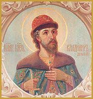
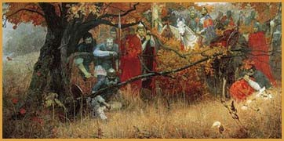
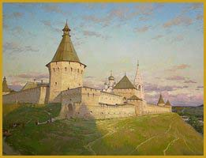

В 1928 г. археолог-серпухович Андрей Николаевич Воронков сделал сенсационное открытие. В 18 км. от г. Серпухова вверх по течению р. Оки у села Бёхово он нашел орудия труда раннекаменного века. В этом же году Воронков нашел Заборьевскую стоянку в р-не ул. Нижняя, недалеко от железной дороги. Она существовала 2500 лет назад. Также им найдены Владычное и Высоцкое селища, которые существовали до основания наших монастырей и селище на пересечении улиц Красноармейской и Садовой.
Славянские племена пришли на берега р. Оки с юго-запада и северо-запада из Новгородской земли в VIII-IX веках. Летописец называет родоначальником племени вождя Вятко. Славяне подчинили себе финно-угорские и литовские племена и смешались с ними. Открытые неукрепленные селища были на Соборной горе, между р. Нарой и р. Серпейкой, с севера были отделены рвом, да и сама высота холма, т.е. Соборной горы, в 50 метров - все это служило зашитой Серпуховского городища.
Археологические обследования, проведенные А. Н. Воронковым, позволяют делать вывод, что Серпухов X-XIII веков был одним из крупнейших городов Древнерусского государства.
В начале XIV века Московские князья в результате столкновения с Рязанским княжеством присоединили к своим владениям земли по левому берегу р. Оки от Коломны до устья р. Протвы. Серпухов стал порубежным укреплением к юго-западу от Москвы. С запада он защищал Москву от нападения литовцев, с юга - от рязанцев.
В письменных источниках Серпухов впервые упоминается в духовной грамоте Ивана Калиты. До нас дошли два текста завещаний - важнейших исторических источников, первых документов архива московских князей. Дореволюционные и советские историки, изучавшие духовные Калиты на протяжении более двухсот лет, не могли прийти к единому мнению о времени их написания. Разными источниковедами составление грамот относилось к различным годам княжения Ивана Калиты - от 1327 до 1340 года и приурочивалось к поездкам великого князя в Орду, где эти грамоты должны были утверждаться. Автор первого научного труда по истории Серпухова и Серпуховского княжества П.Ф. Симеон считал, что обе грамоты написаны в 1328 году.
Академик Л.В. Черепнин считал, что дошедшие до нас духовные - это два варианта одного документа, которые отличались количеством и составом владений, которые Калита передавал своим детям и жене, и подготовлены они были в 1339 г., когда московский князь обязан был в очередной раз ехать в Орду. Оба варианта завещания были представлены в Орде хану, который, согласившись с расширением московской территории, утвердил второй, более полный вариант.
Совершенно иначе датировал оба документа доктор исторических наук А. А. Зимин. Они были написаны, по его мнению, в 1327 или 1328 г.
Одно из последних по времени исследований принадлежит доктору исторических наук В.А. Кучкину, который доказал, что духовные Калиты - два разных документа, составленные в разное время. Первую духовную он датирует 1336 г., а вторую 1339 г.
Коломенский историк А.Б. Мазуров, занимавшийся последние годы изучением завещаний Великого князя, установил, что «такой формы зависимости от Орды, как утверждение там великокняжеского завещания, не существовало», а слова, что духовная составлялась «идя в Орду», говорят об обстоятельствах, при которых оно составлялось. Он убедительно доказал: московские князья XIV века, оставаясь вассалами Орды, в первую очередь заботились о своих интересах и интересах своего княжества.
Краеведу-серпуховичу Б.С. Мамонтову не дает покоя мысль о том, что в соседней с нами Рузе на въездной колонне чёткими буквами выведено: «Город Руза основан в 1328 году», а в Серпухове даты нет ни на одном въезде. Можно было поставить дату основания, 1339 г., но ситуация с годом не так проста. В Рузском краеведческом музее на видном месте красуется надпись: «се даю сыну своему Ивану Звенигород, Кремичну, Рузу, Суходол, Великую Слободу, Тростну, Нечугу» (из «духовного завещания» князя Московского Ивана Даниловича Калиты). В той же договорной духовной грамоте далее есть строки: «А се далъ есмъ сыну своему Андрею: Лопастну, Северьску..., Серпохов, Нивну, Темну,... а се сёла: село Талежьское, село Серпоховьское, село Калбасиньское, село Ногатиньское». Даты разнятся на 11 лет.
Владение князя Андрея Ивановича - волость Серпохов, из центра которой - села Серпоховское или рядом с ним, через несколько десятилетий появится первый город в нашем крае - теперешний Серпухов.
Андрей Иванович во владение завещанными землями вступил в 1341 году. С этого времени и начинается история Серпуховского удельного княжества, а князь Андрей Иванович - его первым князем. Центром княжества Серпухов был выбран не случайно. Город находился на рубеже Московского княжества и стоял на высоком холме, защищенном речными преградами (Окой, Нарой и Серпейкой) и глубоким оврагом. Такая надежная оборонительная позиция способствовала быстрому развитию города, несмотря на частые набеги татар, литовцев и враждебных московскому князю рязанских князей. Серпухов стал верным и надёжным помощником Москвы и её деятельности по объединению русских земель и в создании единого Русского национального государства. Серпуховичи стойко защищали Москву от её многочисленных внешних и внутренних врагов.
Андрей Иванович скончался 6 июня 1353 г., а Серпуховский удел перешел к его сыну Ивану, так как Владимир родился в «сорочины» смерти отца. Год рождения Ивана Андреевича неизвестен, о нём дошло до нас только одно известие, что он скончался в 1358 г., будучи младенцем или отроком, так как отец его женился в 1345 г.
После смерти Ивана удел перешел Владимиру Андреевичу.
Князь Владимир Андреевич
 Князь Серпуховской Владимир Храбрый - праправнук Александра Невского, внук Ивана Калиты, сын князя Андрея Ивановича, двоюродный брат Великого князя Московского Дмитрия Ивановича Донского.
Дмитрий Донской - праправнук Александра Невского, внук Ивана Калиты, сын Ивана II, двоюродный брат князя Владимира Андреевича Серпуховского.
Владимиру Андреевичу достался в наследство от отца, князя Андрея Ивановича Серпуховский удел, в который входили 11 волостей и 10 сел. Впоследствии его владения значительно увеличились. Серпухов и Боровск, Городец, Углич, Козельск, Алексин... Но не только. Князь Владимир владел третью Москвы и был вторым лицом в московском княжестве.
В Москве прошли его детские и юношеские годы. Здесь он вместе с Дмитрием Ивановичем находился под опекой Московского святителя Алексия, возведенного в митрополиты всея Руси. Святитель Алексий бережно хранил обе княжеские ветви Москвы - Дмитрия и неразлучного с ним Владимира. Кем станут они друг для друга? Мудрый Алексий понимал, что величие Москвы целиком зависит от отношений двух братьев. Станут они сподвижниками, или соперниками?
Святой митрополит увидел в малолетнем князе Владимире христианские добродетели: непоколебимую веру и братолюбие. Впоследствии Владимир Андреевич стал самым верным и самым надежным проводником политики великого московского князя Дмитрия Донского. Он утверждался, используя свои способности быть военным дипломатом и умением воевать. Владимир Андреевич укреплял Серпухов, строил монастыри и храмы, верой и правдой служил как своему уделу, так и Московскому княжеству, защищая интересы Отечества в военных походах.
Походов и сражений было много. Мужали в походах братья-князья. Москва возвеличивалась. Начиналось противостояние силам Орды.
1380 год. Куликовская битва. В разработке плана сражения, подготовке битвы и расстановке военных сил принял участие князь Владимир Андреевич Серпуховской. Его засадный полк окажет решающую роль на исход битвы. «...А Волынец и князь Владимир Андреевич будут стоять, прикрытые тенью дубравы, напряженно вглядываясь в страшную круговерть битвы и судорожно прикидывая - сколько ещё войск у Мамая в резерве? Хватит ли у русской армии сил, чтобы продержаться ещё немного, или уже пора?».
В память об этом героическом сражении великий князь Московский Дмитрий Иванович стал именоваться Донским, а Владимира Андреевича Серпуховского народ назвал Храбрым. С этим именем он и вошел в историю.
Московский князь Дмитрий Иванович Донской умер 19 мая 1389 года. Его похоронили в усыпальнице Московских князей Архангельского собора.
Князь Серпуховской Владимир Андреевич умер 4 мая 1410 года. Согласно иерархии он был удостоен захоронения в династической усыпальнице Архангельского собора Московского кремля.
Куликовская битва
История Серпухова и Серпуховского края является неотъемлемой частью истории России. Начинается история с эпохи переселения в Московский край славянских племен вятичей и кривичей и предстает в виде непрерывной цепи ярких исторических событий, многие из которых имеют общенациональное значение. Одним из таких событий является Куликовская битва.
8 сентября 1380 года (по старому стилю) у притока Дона, реки Непрядвы, произошла битва, которая нанесла сильный удар по господству Золотой орды. В разработке плана сражения, подготовке битвы и расстановке военных сил принял участие князь Владимир Андреевич Серпуховской.
«На Москве кони ржут, звенит слава русская по всей земле Русской, трубы трубят в Коломне, в бубны бьют в Серпухове, стоят стяги у Дона великого на берегу» («Задонщина»). Вся Русь откликнулась на призыв Великого князя, пришла в движение. Одним из первых прибыл в Москву со своей ратью князь Серпуховской.
 Под развернутыми знаменами из разных ворот Кремля тремя колоннами вышли русские полки, сопровождаемые священнослужителями с крестами и чудотворными иконами. Один из отрядов шел на Коломну по Брашевской дороге, другой по Болвановской дороге, сам Великий князь - по Серпуховской. После смотра войска в Коломне двинулись северным берегом Оки на запад к устью Лопасни. 6 сентября русские полки подошли к Дону. В ночь с 7 на 8 сентября 1380 г., перейдя Дон, русское войско расположилось на Куликовом поле, а ранним утром началась смертельная схватка с врагами. Рекой лилась кровь, слышался звон оружия, конское ржание, крики и стоны раненых. Исход сражения решил засадный полк, которым руководили Владимир Андреевич Серпуховской и Дмитрий Михайлович Боброк-Волынский. «... А Волынец и князь Владимир Андреевич будут стоять, прикрытые тенью дубравы, напряженно вглядываясь в страшную круговерть битвы и судорожно прикидывая - сколько ещё войск у Мамая в резерве? Хватит ли у русской армии сил, чтобы продержаться ещё немного, или уже пора?». Стремительный натиск свежего русского резерва заставил врага бежать.
Потом в череде исторических событий будет ополчение Минина и Пожарского, Полтавская битва, Отечественные войны 1812 и 1941 года и другие военные события. Но именно на Куликовом поле прошла проверка силы русского оружия и силы русской доблести. Куликово поле стало полем славы русского народа.
Неувядаемой славой в битве на поле Куликовом покрыли себя наши предки - серпуховичи, отважно сражавшиеся вместе со своим князем, нареченным после битвы Храбрым.
Через века
 На протяжении 15 века Серпухов подвергался нескольким опустошительным набегам татар. Татаро-монгольское иго закончилось в 1480 г. Город стал расти ещё быстрее. В то время он входил в пограничную черту Руси по реке Оке. Сторожевые полки стояли в Калуге, Алексине, Тарусе, Серпухове, Кашире, Коломне, Рязани. Серпухов продолжает выполнять функцию южного форпоста Московии. В 1556 г. по приказу Ивана IV Грозного на старом городище, на высоком холме над рекой было закончено сооружение каменного кремля. Первый деревянный Кремль, построенный при Владимире Храбром, утерял свою оборонительную функцию.
Славную победу над татаро-монголами одержало русское войско в битве при селе Молоди летом 1572 г. О Молодинской битве стало известно далеко за пределами Русского государства - в Риме, в Речи Посполитой. Серпухов оказался в центре важных событий.
Серпухов связан с именем Бориса Годунова и его знаменитым походом в 1598 г. «за светлые божие церкви и за православное христианство... в Серпухове, и на Тулу, и на поле... на прямое дело». В это время царь «разослал по всей стране указы, чтобы готовились к войне с татарами и войска собирались к Серпухову». В Серпухове устроили огромный военный лагерь. По Оке, вверх и вниз от Серпухова, войска стояли на 40 верст. Сам Годунов расположился в устье Нары, поставил «город полотняной новотворен, а прежде того не бысть таков».
По известию историка И.Массы «лагерь простирался на 5 миль в ширину по квадрату; сверх того, вдоль р. Оки были расставлены пушки, и к прибытию царя посреди лагеря разбили целый лагерь из шатров, где были залы, канцелярии, башни, конюшни, кухни, церкви - всё так искусно устроено, что издали принимали его за красивый город». В течение нескольких недель устраивались смотры войск. 29 июня Борис Годунов принял послов «с великим убранством, в шатрах». Борис Годунов добился больших дипломатических успехов. Крымские послы, явившиеся с предложением о мире, признали за ним царский титул. Английская королева официально поздравила его с восшествием на престол.
По местным преданиям, там, где стоял шатер Бориса Годунова, возникла потом деревня Борисово.
Начало 17 в. в истории России ознаменовано крестьянскими восстаниями. В 1606 г. вспыхнуло крестьянское восстание под предводительством Ивана Болотникова. В октябре войска подошли к Серпухову, ворота им открыли сами жители. В декабре восставшие были разбиты под Москвой. С изумлением и без боязни встретили их серпуховичи, но запаса продовольствия не было, и войска поспешили на юг к Калуге. Летом 1607 г. в город прибыли правительственные войска под командованием боярина Шуйского. Крестьянское войско было разбито между Серпуховом и Каширой. Было убито 20 тыс. восставших. Окончательно войско Болотникова было уничтожено в Туле. В память о тех событиях одна из улиц Серпухова носит имя Ивана Болотникова.
В 17 веке ремесла перерастают в мелкотоварное производство, появляются первые мануфактуры.
 В 18 в. развивается крупная промышленность. Суконные и парусиновые фабрики Сериковых, парусиновая фабрика купца Кишкина.
В 18 в. развивается крупная промышленность. Суконные и парусиновые фабрики Сериковых, парусиновая фабрика купца Кишкина.
19 век в Серпухове ознаменован ростом хлопчатобумажной промышленности. Это предприятия А. Мараевой, И. Рябова, Каштанова, Серикова, Коншиных, Варгиных.
Набирает силу просветительская и благотворительная деятельность. Во время Отечественной войны 1812 г. В.В. Варгин поставлял для армии седла, потники для лошадей, холст. Он являлся главным поставщиком русской армии.
В 20 в. Серпухов вместе со всей Россией пережил известные события: первую мировую войну, революцию 1917 г., гражданскую войну, Великую Отечественную войну, стал одним из главных промышленных центров Подмосковья.